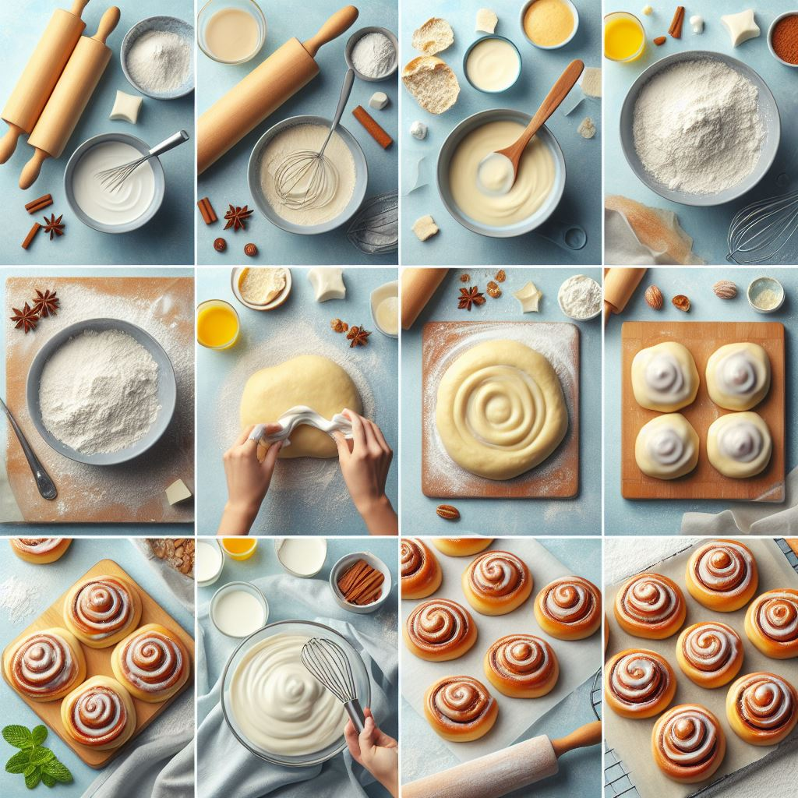

Copycat Cinnabons
Description
Indulge in the heavenly aroma of freshly baked cinnamon rolls with our Copycat Cinnamon Rolls recipe. These soft, fluffy rolls are swirled with a generous amount of cinnamon sugar and topped with a luscious cream cheese icing. Perfect for breakfast, brunch, or anytime you're craving a sweet treat.
Ingredients
- Dough
- 1 cup warm milk
- 2 ¼ teaspoons (1 packet) active dry yeast
- ½ cup granulated sugar
- ⅓ cup unsalted butter, melted
- 2 eggs
- 1 teaspoon salt
- 4 ½ cups all-purpose flour
- Filling
- ½ cup unsalted butter, softened
- 1 cup packed brown sugar
- 2 tablespoons ground cinnamon
- Cream Cheese Icing
- 4 ounces cream cheese, softened
- ¼ cup unsalted butter, softened
- 1 ½ cups powdered sugar
- ½ teaspoon vanilla extract
Instructions

- In a large mixing bowl, dissolve the yeast in warm milk and let it sit for 5 minutes until frothy.
- Add sugar, melted butter, eggs, salt, and 4 cups of flour to the yeast mixture. Mix until a soft dough forms.
- Knead the dough on a floured surface for 5-7 minutes, gradually adding the remaining ½ cup of flour until the dough is smooth and elastic.
- Place the dough in a greased bowl, cover with a clean kitchen towel, and let it rise in a warm place for 1 hour or until doubled in size.
- Punch down the risen dough and roll it out into a 16x21-inch rectangle.
- Spread softened butter over the dough and sprinkle evenly with brown sugar and cinnamon.
- Starting from the long edge, roll the dough tightly into a log and cut into 12 equal slices.
- Place the cinnamon rolls in a greased baking dish, cover, and let them rise for 30 minutes.
- Preheat the oven to 350°F (175°C). Bake the cinnamon rolls for 25-30 minutes or until golden brown.
- While the rolls are baking, prepare the cream cheese icing by mixing cream cheese, softened butter, powdered sugar, and vanilla extract until smooth.
- Once the cinnamon rolls are baked, let them cool slightly before drizzling with cream cheese icing. Serve warm and enjoy!
Enjoy Your Homemade Cinnamon Rolls!
Congratulations, you've just baked a batch of delicious Copycat Cinnamon Rolls! We hope you savor every bite of these warm, gooey treats. Don't forget to share your baking adventures with us on social media using #CookWithOdinRecipes. For more mouthwatering recipes and culinary inspiration, explore our recipe collection. Happy baking!